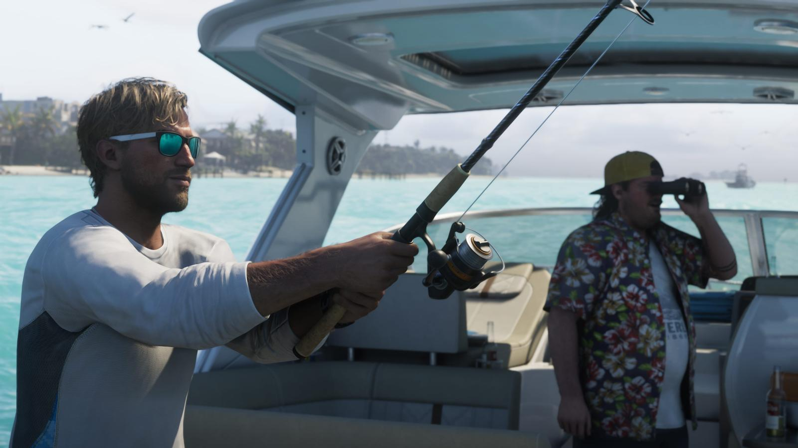

Герои GTA 5 и GTA 6: трое против двоих
Обновлено:

- В GTA 5 было три героя с разными судьбами, в GTA 6 — пара, связанная отношениями.
- Лусия — первая главная героиня-женщина в сюжетной GTA со времён перехода серии в 3D.
- У героев GTA 5 были спецспособности; для GTA 6 Rockstar о них не объявляла.
- Переключаться между Джейсоном и Лусией можно в любой момент — как между тремя героями GTA 5.
Колесо и пара
В 2013 году Rockstar сломала главное правило GTA: один герой — одна история. В GTA 5 вы зажимали кнопку, камера взлетала в небо, пролетала над Лос-Сантосом — и вы оказывались в чужой жизни. Иногда Тревор просыпался на пляже в чём-то очень странном, а Майкл в этот момент ругался с сыном. В GTA 6 героев снова несколько. Но их не трое, и они не чужие друг другу.
Было — стало
| GTA 5 | GTA 6 | |
|---|---|---|
| Сколько героев | Трое | Двое |
| Кто они | Майкл, Франклин, Тревор | Джейсон Дюваль и Лусия Каминос |
| Как связаны | Деловые партнёры, у каждого своя жизнь | Пара — отношения в центре сюжета |
| Переключение | Колесо персонажей, полёт камеры над картой | В любой момент (по превью) |
| Спецспособности | Замедление стрельбы, вождения, режим ярости | Не объявлены |
| Героиня-женщина | Нет | Да — Лусия |
| Где живут | Лос-Сантос и округ Блэйн | Вайс-Сити и Кис |
Три судьбы GTA 5
Каждый из трёх героев GTA 5 был отдельным жанром. Майкл Де Санта — грабитель банков на «пенсии», который живёт по программе защиты свидетелей и ненавидит свою идеальную жизнь в особняке. Франклин Клинтон — парень из южного Лос-Сантоса, который изымает машины у должников и хочет большего. Тревор Филипс — хаос в человеческом обличье.
У каждого была своя спецспособность: Майкл замедлял время в перестрелке, Франклин — за рулём, а Тревор впадал в ярость, наносил больше урона и почти не получал его сам. Играли их Нед Люк, Шон Фонтено и Стивен Огг.

Пара GTA 6
GTA 6 строит сюжет вокруг двоих — Джейсона и Лусии, которые, по описанию Rockstar, всегда знали, что шансы против них. Их отношения — не фон, а мотор истории: ограбления, долги, доверие. Переключаться между ними, по превью, можно в любой момент, так же свободно, как в GTA 5. Подробно о каждом — Джейсон Дюваль — главный герой GTA 6 и Лусия Каминос — главная героиня GTA 6.
Пресса с первого трейлера называет их современными Бонни и Клайдом — финальная сцена с ограблением магазина вдвоём сделала это сравнение неизбежным.
Настоящие Бонни Паркер и Клайд Бэрроу погибли 23 мая 1934 года в засаде полиции в Луизиане. Их «карьера» длилась около двух лет, а легенда пережила их почти на век — во многом благодаря фотографиям, которые пара делала сама и которые попали в газеты. Джейсон и Лусия, кстати, тоже живут в мире, где всё снимается на телефон и выкладывается в соцсети.
Почему Лусия — событие
В самой первой GTA 1997 года среди восьми персонажей на выбор были и женщины — но это были просто имя и портрет, без сюжета и характера. С тех пор, как серия перешла в 3D в GTA III (2001), каждый главный герой сюжетной игры был мужчиной: Клод, Томми, Си-Джей, Нико, трио GTA 5. Лусия Каминос — первая главная героиня с собственной историей за четверть века.

Что это меняет
- Меньше героев — плотнее история. Вместо трёх параллельных линий — одна общая.
- Переключение остаётся, но теперь это не прыжок в чужую жизнь, а смена взгляда внутри одной.
- Спецспособности — главный вопрос. В GTA 5 они определяли стиль игры; про GTA 6 Rockstar пока молчит.
А вы за кого будете играть больше — за Джейсона или Лусию? Проверьте себя: Тест: кто ты — Лусия или Джейсон?. Другие сравнения — Полиция в GTA 5 и GTA 6: как изменился розыск и GTA 5 и GTA 6: главные отличия.
Источники: Rockstar Games (официальные описания героев GTA V и GTA VI); превью GTA VI (июль 2026); Wikipedia — Grand Theft Auto (1997), Bonnie and Clyde.